welcome to my webpage
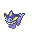
my name is Finn !!
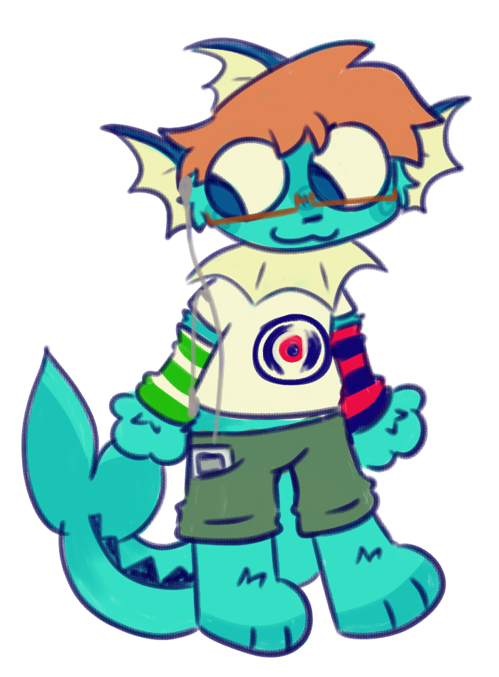
that's me !
(if you couldn't tell i'm a vaporeon)
i like to listen to music and to swim and writing in my journal and coding but that was pretty obvious hense the website :P
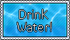

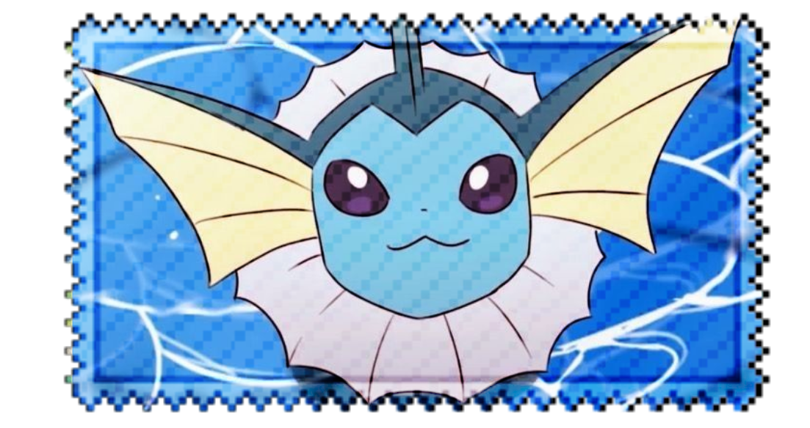
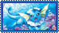
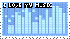
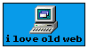
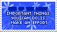
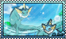
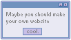
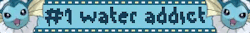

"'cause it was barely attached
to anything other than
broken synthesizer keys
cassette tapes and burned cds"
more music i like !! (u should click them !!)
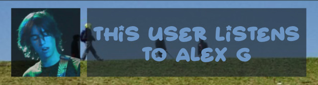